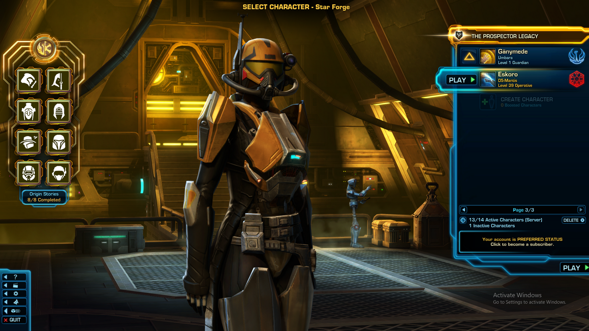

Hyde Eskoro was born on the sprawling metropolis of Dela-5, a city where neon lights and cybernetic enhancements were as common as the air people breathed. From a young age, Hyde showed an uncanny aptitude for technology and an insatiable curiosity about the unknown.
Growing up in the shadow of the city's towering mega-corporations, Hyde's life took a dark turn when his family was unjustly targeted by one of these powerful entities. In a violent corporate raid, his parents were killed, and he was left with a burning desire for revenge.
Hyde went underground, honing his skills as a hacker, engineer, and marksman. He built a reputation as the go-to specialist for extracting sensitive data from heavily fortified servers and eliminating high-profile targets. Along the way, he got rid of his first name and was know simplyn as "Eskoro", acting as his family's ghost, haunting those who took their lives.
Refusing to align himself with any single faction, Hyde operates as a freelance bounty hunter, taking contracts from those who can afford his services. His cyber-enhanced eyes and reflexes make him a formidable opponent in any firefight, and his intricate knowledge of the digital realm allows him to navigate the complex networks of power and corruption that control the future.
Hyde Eskoro's ultimate goal is clear: to dismantle the corporate empires that have plagued his city and bring those responsible for his family's demise to justice. Along the way, he navigates a treacherous world of high-tech intrigue, double-crosses, and moral ambiguity, all while seeking redemption for the darkness that has consumed his life.